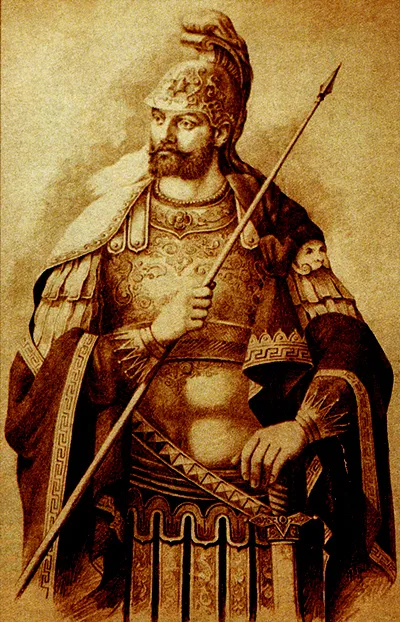
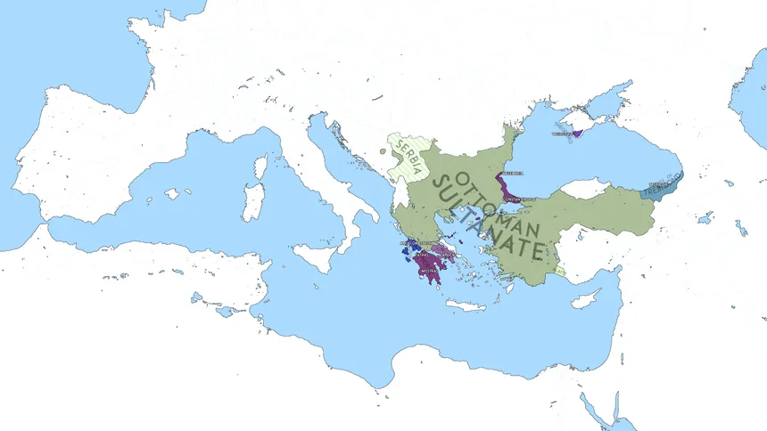
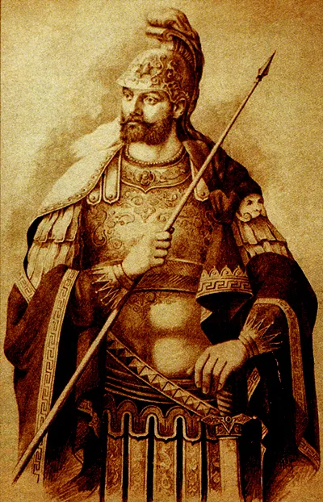
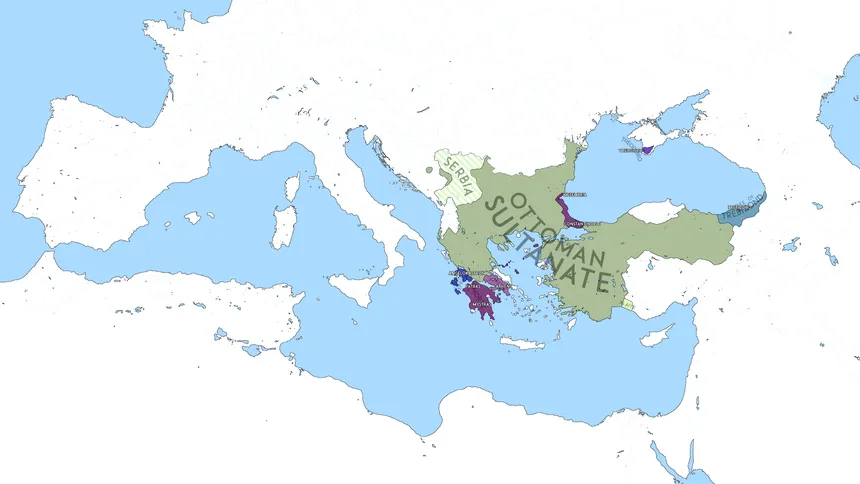

Details about Koenigsegg Agera RS ML
The Eastern Roman Empire, commonly known as the Byzantine Empire, began in 330 CE when Emperor Constantine established Byzantium, later renamed Constantinople, as the new capital of the Roman Empire. This marked a significant shift in the empire's focus, leading to a period of prosperity and cultural flourishing. The reign of Emperor Justinian from 527 to 565 CE is often regarded as a golden age for Byzantium; during this time, the empire successfully reconquered parts of the Western Roman territories, including Italy and North Africa, and undertook monumental architectural projects such as the construction of the Hagia Sophia. The Byzantines also launched invasions against the Sassanid Empire, gaining territory and influence in the region. However, the empire faced significant challenges, including constant invasions from Arab forces, who began their expansion shortly after the rise of Islam in the 7th century. The Byzantines suffered major defeats in their initial conflicts with Muslim armies, notably at the Battle of Yarmouk in 636 CE, which resulted in the loss of vast territories in the Levant.
In addition to Arab incursions, the empire faced threats from the Turks and the Mongol Horde, which contributed to its gradual decline. The Great Schism of 1054 formally divided the Roman Catholic Church in the West from the Eastern Orthodox Church, deepening religious and political divisions within Christendom. The Fourth Crusade in 1204 dealt a devastating blow to Byzantium, as the sack of Constantinople severely weakened the empire and its influence. Ultimately, the Byzantine Empire came to an end in 1453 when Sultan Mehmed II of the Ottoman Turks captured Constantinople, marking not only the fall of the Eastern Roman Empire but also the rise of the Ottoman Empire, which would dominate the region for centuries.
Byzantine Rulers and its territories during their reign

 


